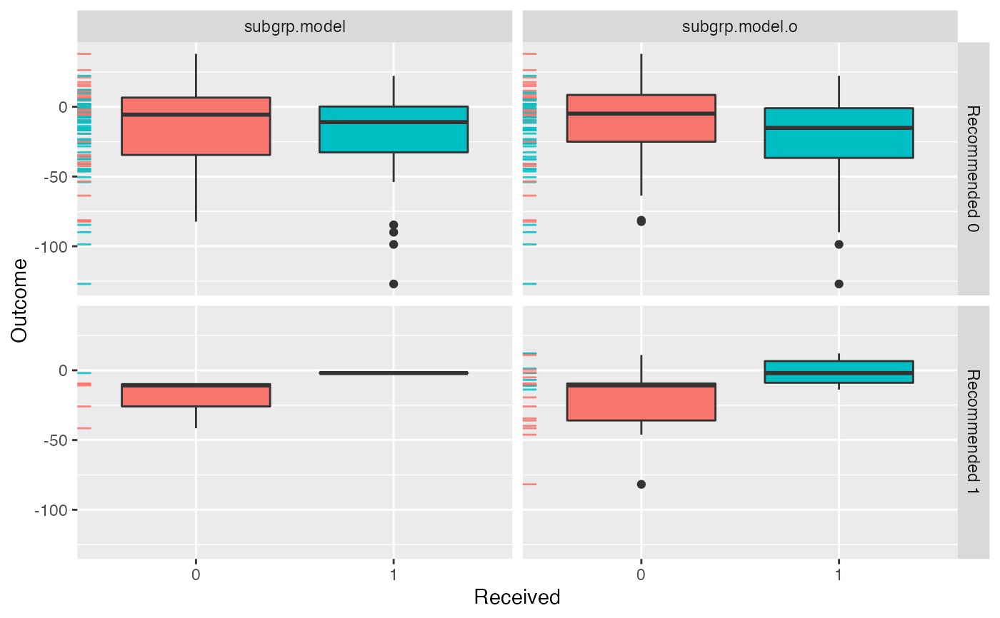

R/plot_compare.R
plotCompare.RdPlots comparison of results for estimated subgroup treatment effects
plotCompare( ..., type = c("boxplot", "density", "interaction", "conditional"), avg.line = TRUE )
| ... | the fitted (model or validation) objects to be plotted. Must be either
objects returned from |
|---|---|
| type | type of plot. |
| avg.line | boolean value of whether or not to plot a line for the average
value in addition to the density (only valid for |
fit.subgroup for function which fits subgroup identification models and
validate.subgroup for function which creates validation results.
library(personalized) set.seed(123) n.obs <- 100 n.vars <- 15 x <- matrix(rnorm(n.obs * n.vars, sd = 3), n.obs, n.vars) # simulate non-randomized treatment xbetat <- 0.5 + 0.5 * x[,1] - 0.5 * x[,4] trt.prob <- exp(xbetat) / (1 + exp(xbetat)) trt01 <- rbinom(n.obs, 1, prob = trt.prob) trt <- 2 * trt01 - 1 # simulate response delta <- 2 * (0.5 + x[,2] - x[,3] - x[,11] + x[,1] * x[,12]) xbeta <- x[,1] + x[,11] - 2 * x[,12]^2 + x[,13] xbeta <- xbeta + delta * trt # continuous outcomes y <- drop(xbeta) + rnorm(n.obs, sd = 2) # create function for fitting propensity score model prop.func <- function(x, trt) { # fit propensity score model propens.model <- cv.glmnet(y = trt, x = x, family = "binomial") pi.x <- predict(propens.model, s = "lambda.min", newx = x, type = "response")[,1] pi.x } subgrp.model <- fit.subgroup(x = x, y = y, trt = trt01, propensity.func = prop.func, loss = "sq_loss_lasso", nfolds = 5) # option for cv.glmnet subgrp.model.o <- fit.subgroup(x = x, y = y, trt = trt01, propensity.func = prop.func, loss = "owl_logistic_flip_loss_lasso", nfolds = 5) plotCompare(subgrp.model, subgrp.model.o)